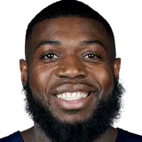

His teams won one title, with the 2021-22 Golden State Warriors. In his 315 games for 3 teams over 7 seasons they went 149–166 (47.3%), −17 games under .500, with an average final finish of 15.0. The biggest one-season rise in his career: the Golden State Warriors went from #17 in 2020-21 to #1 in 2021-22.
Jump to: Record by opponent · Season by season · Teammate help
Compare Damion Lee with…
Suggested, same era and similar teammate help:


Final NBA finish, season by season
Title Finals Other playoffs Missed playoffs. #1 = champion; the dashed line is last place that season. Each point opens that season's final standings.
All 30 teams ranked in 2021-22, his best finish (#1)Teammate help
 Stephen Curry24.53 seasons
Stephen Curry24.53 seasons Kevin Durant6.53 seasons
Kevin Durant6.53 seasons Draymond Green3.03 seasons
Draymond Green3.03 seasons
Career
Career records (W–L, W − L, with and without) include 2026-27 games through Nov. 22, 2026; season counts and finishes are through 2025-26. Each card opens its board in the same scope. How we count.

Latest completed seasons
Season by season
Newest first; every header sorts. Final NBA finish is the team's rank among all teams that season (#1 = champion) and opens that season's standings. "Without him" uses the team-season window; the span line counts only the games between his first and last game for the team.
| 2024-25 | #21 of 30 | 36–46 43.9% | Missed playoffs | 25 of 82 | 6–19 24.0% | 30–27 52.6%span: 29–26, gap −28.7 | −28.6 | |
| 2022-23 | #7 of 30 | 45–37 54.9% | Lost conf semis 2–4 | 74 of 82 | 40–34 54.1% | 5–3 62.5%span: 5–3, gap −8.4 | −8.4 | |
| 2021-22 | #1 of 30 | 53–29 64.6% | Title 4–2 | 63 of 82 | 41–22 65.1% | 12–7 63.2%span: 12–7, gap +1.9 | +1.9 | |
| 2020-21 | #17 of 30 | 39–33 54.2% | Lost in play-in | 57 of 72 | 28–29 49.1% | 11–4 73.3%span: 1–0, gap −50.9 | −24.2 | |
| 2019-20 | #30 of 30 | 15–50 23.1% | Missed playoffs | 49 of 65 | 12–37 24.5% | 3–13 18.8%span: 3–13, gap +5.7 | +5.7 | |
| 2018-19 | #2 of 30 | 57–25 69.5% | Lost Finals 2–4 | 32 of 82 | 18–14 56.2% | 39–11 78.0%span: 37–10, gap −22.5 | −21.8 | |
| 2017-18 | #27 of 30 | 24–58 29.3% | Missed playoffs | 15 of 82 | 4–11 26.7% | 20–47 29.9%span: N/A, gap N/A | −3.2 |
On/off, starts and close games
From the lineup data, 1996-97 on. On/off is net points per 100 possessions with him on the floor minus off, a different unit from the win-rate gaps. Started and off the bench are team records in those games; close games are those within 5 points in the last 5 minutes with him on the floor.
| 2024-25 | +18.0 | N/A | 6–19 24.0% | N/A | |
| 2022-23 | −0.1 | 3–2 60.0% | 37–32 53.6% | 12–12 50.0% | |
| 2021-22 | −4.3 | 3–2 60.0% | 38–20 65.5% | 9–10 47.4% | |
| 2020-21 | +3.2 | 0–1 0.0% | 28–28 50.0% | 7–10 41.2% | |
| 2019-20 | +9.5 | 10–26 27.8% | 2–11 15.4% | 7–12 36.8% | |
| 2018-19 | −8.2 | N/A | 18–14 56.2% | 1–1 50.0% | |
| 2017-18 | +10.0 | 3–8 27.3% | 1–3 25.0% | 4–4 50.0% |
Teammate help by season
Two separate numbers per season, each with every teammate that adds to it. Help this season = Teammates Score points for honors won that season by teammates who shared a game with him. Help coming in = the same teammates' honors from the season before. How help works.
- 2024-25
 Phoenix
Kevin Durant All-Star114 g
Phoenix
Kevin Durant All-Star114 g
Help this season: 1 = 1 Kevin Durant
More: help coming in and other teammates
Help coming in (teammates' honors the season before): 7 = 4 Kevin Durant + 3 Devin Booker
Other teammates (no honors that season): Ryan Dunn 25 g, Tyus Jones 24 g, Mason Plumlee 23 g, Oso Ighodaro 23 g, Royce O'Neale 23 g, Devin Booker 22 g, Monte Morris 19 g, Bol Bol 18 g, Collin Gillespie 16 g, Grayson Allen 16 g, Bradley Beal 14 g, Nick Richards 13 g, TyTy Washington 10 g, Jalen Bridges 8 g and 4 more
- 2022-23Phoenix
Kevin Durant All-Star14 g
Help this season: 1 = 1 Kevin Durant
More: help coming in and other teammates
Help coming in (teammates' honors the season before): 13 = 5 Devin Booker + 4 Kevin Durant + 3 Chris Paul + 1 Mikal Bridges
Other teammates (no honors that season): Torrey Craig 71 g, Jock Landale 64 g, Josh Okogie 64 g, Deandre Ayton 62 g, Ishmail Wainright 56 g, Mikal Bridges 56 g, Bismack Biyombo 53 g, Chris Paul 51 g, Devin Booker 45 g, Cameron Payne 40 g, Dario Saric 37 g, Landry Shamet 35 g, Duane Washington Jr 31 g, Saben Lee 23 g and 4 more
- 2021-22
 Golden State
Stephen Curry Finals MVPAll-NBA 2ndAll-StarAll-Star MVP14.548 gDraymond Green All-StarAll-Def 2nd1.533 g
Golden State
Stephen Curry Finals MVPAll-NBA 2ndAll-StarAll-Star MVP14.548 gDraymond Green All-StarAll-Def 2nd1.533 g Andrew Wiggins All-Star157 g
Andrew Wiggins All-Star157 g
Help this season: 17 = 14.5 Stephen Curry + 1.5 Draymond Green + 1 Andrew Wiggins
More: help coming in and other teammates
Help coming in (teammates' honors the season before): 6 = 5 Stephen Curry + 1 Draymond Green
Other teammates (no honors that season): Kevon Looney 63 g, Jordan Poole 60 g, Juan Toscano-Anderson 58 g, Gary Payton II 56 g, Jonathan Kuminga 54 g, Nemanja Bjelica 53 g, Otto Porter 45 g, Moses Moody 42 g, Chris Chiozza 24 g, Andre Iguodala 23 g, Klay Thompson 23 g, Quinndary Weatherspoon 9 g, Jeff Dowtin 4 g
- 2020-21Golden State
Stephen Curry All-NBA 1stAll-Star549 gDraymond Green All-Def 1st149 g
Help this season: 6 = 5 Stephen Curry + 1 Draymond Green
More: help coming in and other teammates
Help coming in (teammates' honors the season before): 0.25 = 0.25 Eric Paschall
Other teammates (no honors that season): Andrew Wiggins 57 g, Kent Bazemore 55 g, Kelly Oubre 50 g, Mychal Mulder 46 g, Kevon Looney 46 g, Brad Wanamaker 39 g, Juan Toscano-Anderson 39 g, James Wiseman 38 g, Eric Paschall 38 g, Jordan Poole 36 g, Nico Mannion 22 g, Alen Smailagic 8 g, Gary Payton II 6 g, Marquese Chriss 2 g
- 2019-20Golden State

Eric Paschall All-Rookie 1st0.2544 gHelp this season: 0.25 = 0.25 Eric Paschall
More: help coming in and other teammates
Help coming in (teammates' honors the season before): 6.5 = 5 Stephen Curry + 1 D'Angelo Russell + 0.5 Draymond Green
Other teammates (no honors that season): Marquese Chriss 45 g, Jordan Poole 42 g, Omari Spellman 33 g, Glenn Robinson III 32 g, Alec Burks 32 g, Draymond Green 31 g, Ky Bowman 31 g, D'Angelo Russell 26 g, Willie Cauley-Stein 25 g, Jacob Evans 24 g, Kevon Looney 16 g, Juan Toscano-Anderson 13 g, Andrew Wiggins 12 g, Alen Smailagic 12 g and 6 more
- 2018-19Golden State
Stephen Curry All-NBA 1stAll-Star522 gKevin Durant All-NBA 2ndAll-StarAll-Star MVP4.528 g
 Klay Thompson All-StarAll-Def 2nd1.529 gDraymond Green All-Def 2nd0.519 g
Klay Thompson All-StarAll-Def 2nd1.529 gDraymond Green All-Def 2nd0.519 g
Help this season: 11.5 = 5 Stephen Curry + 4.5 Kevin Durant + 1.5 Klay Thompson + 0.5 Draymond Green
More: help coming in and other teammates
Help coming in (teammates' honors the season before): 21.5 = 15 Kevin Durant + 3 Stephen Curry + 1.5 Draymond Green + 1 Klay Thompson + 1 DeMarcus Cousins
Other teammates (no honors that season): Jordan Bell 32 g, Quinn Cook 32 g, Jonas Jerebko 30 g, Kevon Looney 30 g, Andre Iguodala 23 g, Alfonzo McKinnie 23 g, Shaun Livingston 21 g, Jacob Evans 18 g, Damian Jones 12 g, DeMarcus Cousins 11 g, Marcus Derrickson 6 g, Andrew Bogut 4 g
- 2017-18
 Atlanta
Atlanta
 John Collins All-Rookie 2nd0.12513 g
John Collins All-Rookie 2nd0.12513 g
Help this season: 0.125 = 0.125 John Collins
More: help coming in and other teammates
Help coming in (teammates' honors the season before): 0
Other teammates (no honors that season): Mike Muscala 15 g, Tyler Dorsey 15 g, Isaiah Taylor 15 g, Taurean Prince 15 g, Dewayne Dedmon 14 g, Andrew White 10 g, Miles Plumlee 9 g, Tyler Cavanaugh 9 g, Josh Magette 5 g, Dennis Schroeder 5 g, DeAndre Bembry 5 g, Antonius Cleveland 4 g, Jeremy Evans 1 g
Record against each opponent
- Most playoff series against one franchise: 2 against the Denver Nuggets, 1–1 in series and 2–4 in games.
Regular season, through 2025-26 (2026-27 games not included): 315 games, 149–166, against 30 franchises.
Grouped by franchise (named as today); game lists keep each team's name that season. Filters and the tab are kept in the URL, so a filtered view can be shared.
| Games list | |||||||
|---|---|---|---|---|---|---|---|
| 17 | 9–8 | 52.9% | +1 | N/A | 2017-18 to 2024-25 | ||
| 15 | 8–7 | 53.3% | +1 | N/A | 2017-18 to 2024-25 | ||
| 14 | 5–9 | 35.7% | −4 | 1–0 (3–1 in games) | 2018-19 to 2024-25 | ||
| 14 | 7–7 | 50.0% | 0 | N/A | 2017-18 to 2024-25 | ||
| 14 | 6–8 | 42.9% | −2 | N/A | 2017-18 to 2024-25 | ||
| 14 | 6–8 | 42.9% | −2 | N/A | 2018-19 to 2024-25 | ||
| 13 | 5–8 | 38.5% | −3 | 1–0 (4–0 in games) | 2018-19 to 2022-23 | ||
| 13 | 7–6 | 53.8% | +1 | N/A | 2018-19 to 2022-23 | ||
| 13 | 8–5 | 61.5% | +3 | N/A | 2018-19 to 2024-25 | ||
| 12 | 4–8 | 33.3% | −4 | 1–0 (4–2 in games) | 2018-19 to 2024-25 | ||
| 11 | 3–8 | 27.3% | −5 | 1–0 (2–2 in games) | 2017-18 to 2024-25 | ||
| 11 | 4–7 | 36.4% | −3 | 1–1 (2–4 in games) | 2018-19 to 2024-25 | ||
| 11 | 7–4 | 63.6% | +3 | N/A | 2018-19 to 2022-23 | ||
| 11 | 5–6 | 45.5% | −1 | N/A | 2017-18 to 2024-25 | ||
| 10 | 3–7 | 30.0% | −4 | N/A | 2017-18 to 2022-23 | ||
| 10 | 6–4 | 60.0% | +2 | N/A | 2017-18 to 2022-23 | ||
| 10 | 4–6 | 40.0% | −2 | N/A | 2017-18 to 2022-23 | ||
| 10 | 4–6 | 40.0% | −2 | N/A | 2018-19 to 2024-25 | ||
| 9 | 6–3 | 66.7% | +3 | N/A | 2018-19 to 2024-25 | ||
| 9 | 5–4 | 55.6% | +1 | N/A | 2018-19 to 2024-25 | ||
| 8 | 4–4 | 50.0% | 0 | N/A | 2017-18 to 2022-23 | ||
| 8 | 5–3 | 62.5% | +2 | N/A | 2018-19 to 2024-25 | ||
| 8 | 6–2 | 75.0% | +4 | N/A | 2018-19 to 2022-23 | ||
| 8 | 2–6 | 25.0% | −4 | N/A | 2017-18 to 2022-23 | ||
| 8 | 3–5 | 37.5% | −2 | N/A | 2019-20 to 2024-25 | ||
| 8 | 4–4 | 50.0% | 0 | N/A | 2018-19 to 2021-22 | ||
| 7 | 2–5 | 28.6% | −3 | N/A | 2018-19 to 2022-23 | ||
| 7 | 4–3 | 57.1% | +1 | N/A | 2017-18 to 2024-25 | ||
| 7 | 2–5 | 28.6% | −3 | N/A | 2017-18 to 2022-23 | ||
| 5 | 5–0 | 100.0% | +5 | N/A | 2020-21 to 2022-23 |
Rows add up to his career record in his games. A playoff series counts when he played in it; early round-robin games show as games only. How we count.
Playoffs, with and without him
Arrival and departure
Team wins per 82 games the season before he arrived vs his first season there, and his last season vs the season after he left. He leaves a team only when his next season with games is for another team (or he never plays again); whole seasons he missed and came back from are one "Missed" row with the team's record without him. Per 82 so short seasons compare fairly. These are team records, not a measure of what he did.
| Left | after 2024-25 | 2024-25: 36–46 36.0 per 82 | 2025-26: 45–37 45.0 per 82 without him | +9.0 wins | |
| Missed | 2023-24 (no games) | 2022-23: 45–37 45.0 per 82 | Suns 49–33 without him; back in 2024-25 | N/A | |
| Arrived | 2022-23 | 2021-22: 64–18 64.0 per 82 | 2022-23: 45–37 45.0 per 82 | −19.0 wins | |
| Left | after 2021-22 | 2021-22: 53–29 53.0 per 82 | 2022-23: 44–38 44.0 per 82 without him | −9.0 wins | |
| Arrived | 2018-19 | 2017-18: 58–24 58.0 per 82 | 2018-19: 57–25 57.0 per 82 | −1.0 wins | |
| Left | after 2017-18 | 2017-18: 24–58 24.0 per 82 | 2018-19: 29–53 29.0 per 82 without him | +5.0 wins | |
| Debut | 2017-18 | 2016-17: 43–39 43.0 per 82 | 2017-18: 24–58 24.0 per 82 | −19.0 wins |
Best duos
Team record in regular-season games both played, top 10 by win %, at least 50 games together.
 Nemanja Bjelica
36–17 67.9%
Nemanja Bjelica
36–17 67.9% Gary Payton II
42–20 67.7%
Gary Payton II
42–20 67.7% Jonathan Kuminga
35–19 64.8%
Jonathan Kuminga
35–19 64.8%- Stephen Curry
76–48 61.3%
- Klay Thompson
29–23 55.8%
 Kevon Looney
86–69 55.5%
Kevon Looney
86–69 55.5% Torrey Craig
39–32 54.9%
Torrey Craig
39–32 54.9% Chris Paul
28–23 54.9%
Chris Paul
28–23 54.9%- Andrew Wiggins
69–57 54.8%
 Juan Toscano-Anderson
60–50 54.5%
Juan Toscano-Anderson
60–50 54.5%
With and without his teammates
His 12 teammates with the most regular-season games together. "Together" is the team's record in the games both played for it; "Without him" is the team's record in the games Damion Lee played for that team while the teammate was on it (between the teammate's first and last game for the team, the appearance span) and the teammate did not play. Fewer than 20 games without him: no gap. Games through Nov. 22, 2026. How we count.
- Kevon LooneyGolden State 2018-19 to 2021-22
- Together
- 86–69 55.5%
- Without him
- 11–30 26.8%
- Gap
- 28.7 points lower
 Jordan PooleGolden State 2019-20 to 2021-22
Jordan PooleGolden State 2019-20 to 2021-22- Together
- 65–73 47.1%
- Without him
- 16–15 51.6%
- Gap
- 4.5 points higher
- Draymond GreenGolden State 2018-19 to 2021-22
- Together
- 68–64 51.5%
- Without him
- 26–32 44.8%
- Gap
- 6.7 points lower
- Andrew WigginsGolden State 2019-20 to 2021-22
- Together
- 69–57 54.8%
- Without him
- 2–4 33.3%
- Gap
- Too few games without him
- Stephen CurryGolden State 2018-19 to 2021-22
- Together
- 76–48 61.3%
- Without him
- 17–48 26.2%
- Gap
- 35.1 points lower
- Juan Toscano-AndersonGolden State 2019-20 to 2021-22
- Together
- 60–50 54.5%
- Without him
- 12–11 52.2%
- Gap
- 2.4 points lower
- Eric PaschallGolden State 2019-20 to 2020-21
- Together
- 29–53 35.4%
- Without him
- 11–13 45.8%
- Gap
- 10.5 points higher
- Torrey CraigPhoenix 2022-23
- Together
- 39–32 54.9%
- Without him
- 1–2 33.3%
- Gap
- Too few games without him
 Josh OkogiePhoenix 2022-23; Phoenix 2024-25
Josh OkogiePhoenix 2022-23; Phoenix 2024-25- Together
- 33–38 46.5%
- Without him
- 7–3 70.0%
- Gap
- Too few games without him
 Devin BookerPhoenix 2022-23; Phoenix 2024-25
Devin BookerPhoenix 2022-23; Phoenix 2024-25- Together
- 35–32 52.2%
- Without him
- 11–18 37.9%
- Gap
- 14.3 points lower
 Jock LandalePhoenix 2022-23
Jock LandalePhoenix 2022-23- Together
- 33–31 51.6%
- Without him
- 7–3 70.0%
- Gap
- Too few games without him
- Gary Payton IIGolden State 2020-21 to 2021-22
- Together
- 42–20 67.7%
- Without him
- 4–3 57.1%
- Gap
- Too few games without him